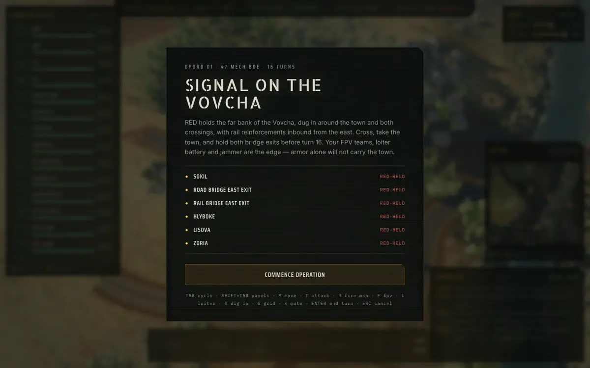

● Live
Steel Signal
A turn-based hex wargame for the drone age — electronic warfare, strike drones and fragile supply lines.
Why I made it
Panzer Corps taught me to love hexes; the drone war rewrote the rules. Nobody had built the sequel that understands both, so I did.